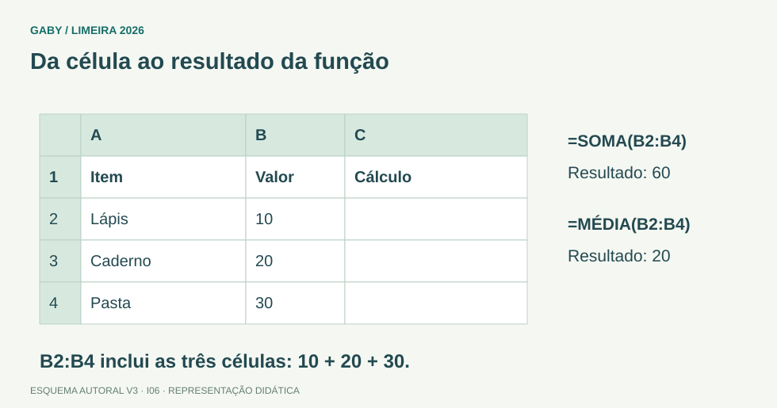

Objetivos do módulo
- Construir fórmulas corretas.
- Aplicar funções usuais.
- Entender precedência e critérios.
Da célula ao resultado da função

Descrição em texto do esquema
- B2:B4: 10, 20 e 30
- SOMA: SOMA(B2:B4) = 60
- MÉDIA: MÉDIA(B2:B4) = 20
Oficina visual · aplique o esquema
Com A1=4, A2=6 e A3=10, calcule =SE(MÉDIA(A1:A3)>=7;"Meta";"Rever").
Atividade autoral complementar da V3. Registre sua resposta; a resolução está no arquivo de gabarito e revisão.
Mapa do conteúdo
1. Operadores e precedência
Parênteses controlam ordem. Sem eles, potência vem antes de multiplicação/divisão, que vêm antes de soma/subtração. Em Excel, =2+3*4 resulta14; =(2+3)*4 resulta20.
2. Funções básicas
| Função | Exemplo | Resultado/ideia |
|---|---|---|
| SOMA | =SOMA(A1:A5) | soma intervalo |
| MÉDIA | =MÉDIA(A1:A5) | média aritmética |
| MÁXIMO | =MÁXIMO(A1:A5) | maior valor |
| MÍNIMO | =MÍNIMO(A1:A5) | menor valor |
| CONT.NÚM | =CONT.NÚM(A1:A5) | conta células numéricas |
3. Função SE
SE testa condição e retorna um valor se verdadeira e outro se falsa. Exemplo: =SE(A1>=60;"Aprovado";"Reprovado"). O separador pode ser ; em configuração brasileira.
4. Funções com critério
CONT.SE conta células que atendem a um critério, por exemplo =CONT.SE(B2:B20;">=80"). SOMASE soma valores associados a um critério. É importante diferenciar intervalo de critério e intervalo de soma.
5. Referências dentro das fórmulas
Ao copiar fórmula com taxa fixa, use referência absoluta. Ex.: =A2*$F$1 para multiplicar cada valor por uma taxa guardada em F1.
Exemplos resolvidos passo a passo
Exemplo 1
Situação: A1=10, A2=20, A3=30. =MÉDIA(A1:A3)?
Exemplo 2
Situação: =SE(B2>=7;"Aprovado";"Reprovado") com B2=6,5.
Exemplo 3
Situação: =2+3*4
Pegadinhas e erros frequentes
- Confundir SOMA com MÉDIA.
- Esquecer aspas em textos da função SE.
- Não fixar referência de taxa.
- Ignorar precedência.
Resumo de prova
- SOMA soma; MÉDIA calcula média.
- SE = teste; valor se V; valor se F.
- CONT.SE conta por critério.
- Parênteses alteram precedência.
- Use $ para referências fixas.
Exercícios do módulo
Resolva sem consultar o arquivo de gabarito. As questões são autorais e construídas para treinar os conceitos do edital.
- 30
- 5
- 0
- 10
- 4
- 8
- 6
- 18
- 15
- 9
- 2
- 4
- 2
- 9
- 4
- 0
- 20
- 24
- 10
- 14
- 9
- 24
- 20
- 14
- criar pasta
- testar condição
- compactar arquivo
- imprimir planilha
- contar células que atendem critério
- somar tudo sem critério
- formatar moeda
- proteger arquivo
- F1
- F$ apenas
- 1F
- $F$1
- fórmula externa
- erro
- texto literal
- referência de célula
Quando terminar, abra Informática 06 - Excel - Fórmulas e Funções - Gabarito e Revisão.
Checklist de domínio
- ☐ Construir fórmulas corretas.
- ☐ Aplicar funções usuais.
- ☐ Entender precedência e critérios.
Meta do módulo: 80% ou mais nas questões, sem depender de consulta.
Referências e conteúdos auxiliares
- Microsoft — Funções do Excel por categoriaConsulte as funções pelo nome e confira os marcadores de versão.
- Microsoft — Criar ou alterar uma referência de célulaReferências usadas em fórmulas e intervalos de células.
Referências externas de apoio consultadas para a V3 em 27/09/2026. A origem das questões é o material autoral do projeto; estes links não indicam que uma instituição publicou ou validou os exercícios. As páginas externas precisam de internet. Em informática, confira a versão do programa; em legislação, observe o recorte e as regras de atualização do edital.